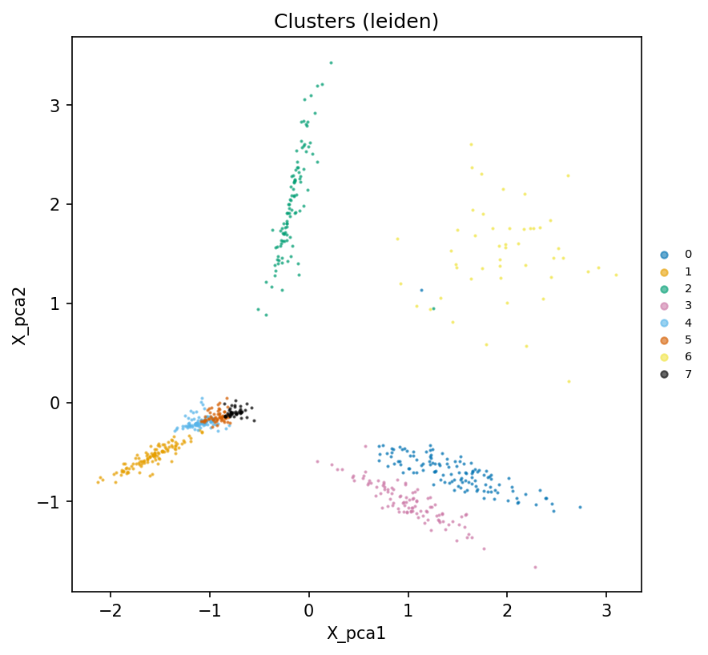
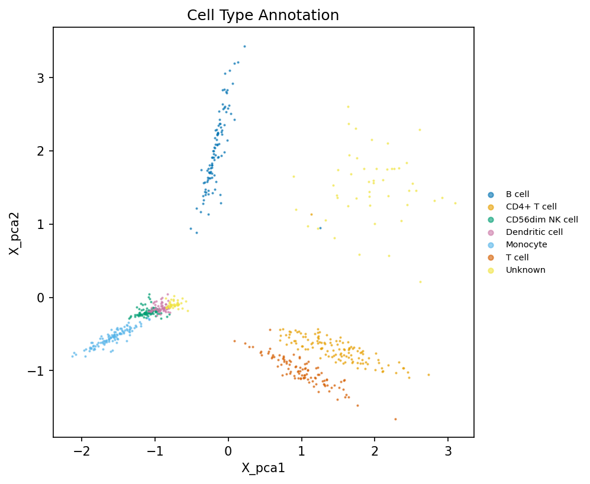
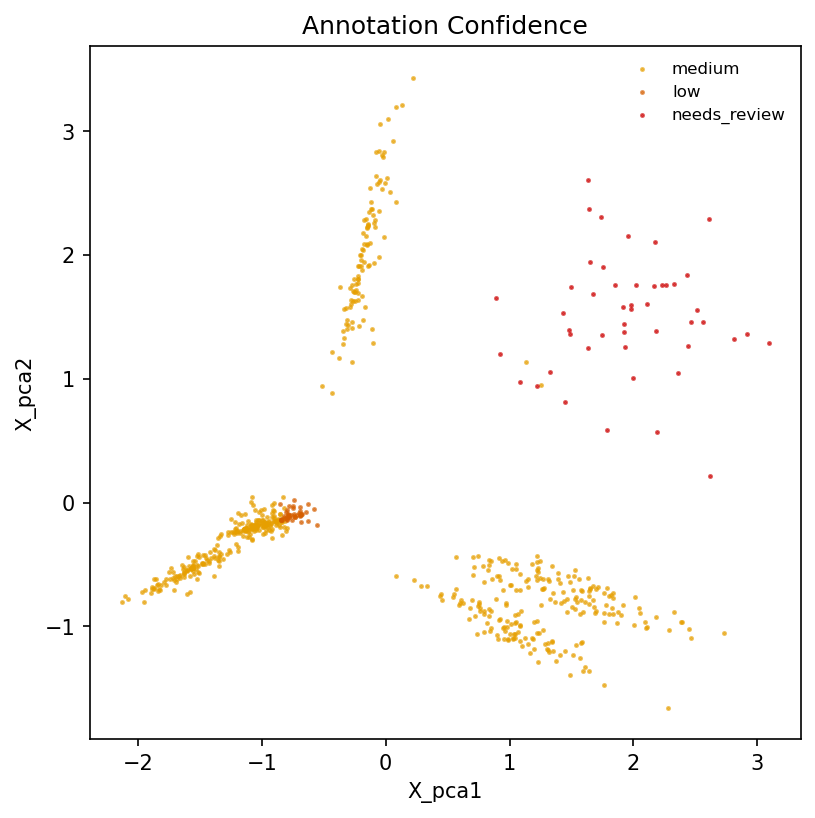
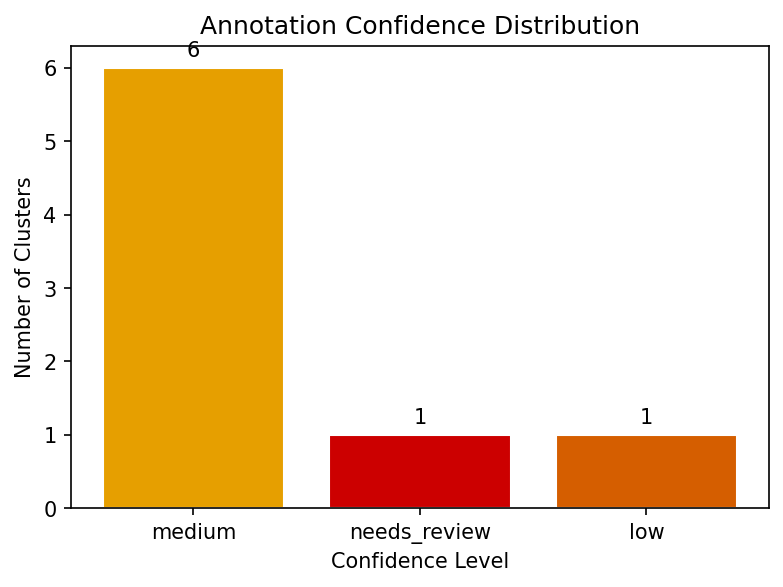
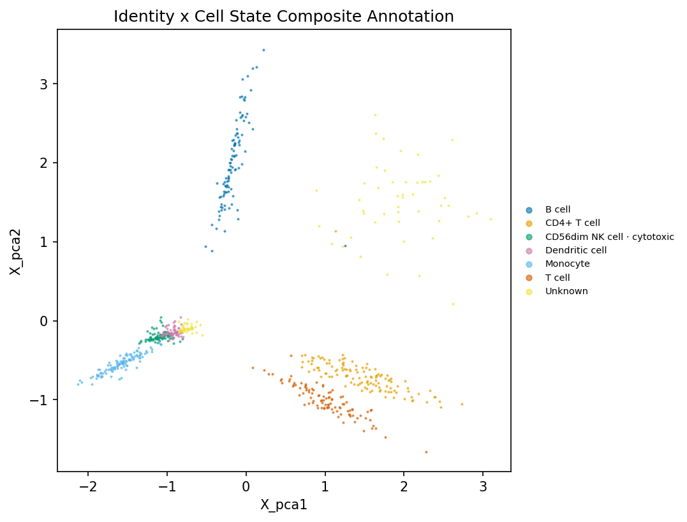
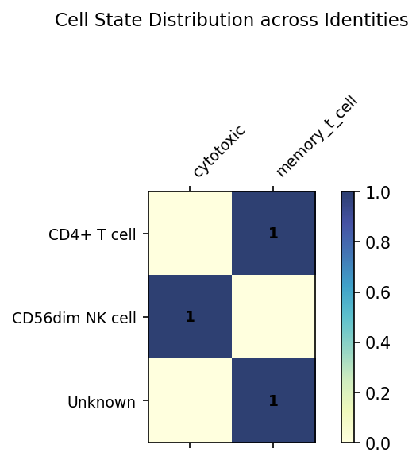

Generated: 2026-08-08T10:05:40.883415+00:00 | CellTypePilot v0.3.0 | MKG: mkg-2026.08
8 cluster(s) reviewed: 0 passed critic checks, 8 flagged for review. Confidence distribution: 6 medium, 1 needs_review, 1 low. Flag breakdown: AGGREGATE_PROVENANCE_ONLY ×8, NEG_MARKER_CONFLICT ×1, POSSIBLE_DOUBLET ×1, PARTIAL_EVIDENCE ×1, PARTIAL_DE_SUPPORT ×1. Flagged clusters need human adjudication before publication; unflagged clusters carry full marker evidence in evidence_table.csv.
Species: human | Tissue: blood | Cluster key: leiden
| Cluster | Final Cell Type | Candidate | Identity Decision | CL ID | State Candidate | State Decision | Score | Confidence | Critic | Evidence Summary |
|---|---|---|---|---|---|---|---|---|---|---|
| 0 | CD4+ T cell | CD4+ T cell | accepted | CL:0000624 | memory_t_cell | hypothesis (0.475) | 0.905 | medium | AGGREGATE_PROVENANCE_ONLY | Cluster 0 → CD4+ T cell [MEDIUM] FLAGGED (AGGREGATE_PROVENANCE_ONLY) | Evidence: marker overlap 100%, score 0.91 | Action: Treat as a draft; verify marker edges against stable records or primary sources. |
| 1 | Monocyte | Monocyte | accepted | CL:0000576 | Unknown | abstain (0.000) | 0.934 | medium | AGGREGATE_PROVENANCE_ONLY | Cluster 1 → Monocyte [MEDIUM] FLAGGED (AGGREGATE_PROVENANCE_ONLY) | Evidence: marker overlap 100%, score 0.93 | Action: Treat as a draft; verify marker edges against stable records or primary sources. |
| 2 | B cell | B cell | accepted | CL:0000236 | Unknown | abstain (0.000) | 0.900 | medium | AGGREGATE_PROVENANCE_ONLY | Cluster 2 → B cell [MEDIUM] FLAGGED (AGGREGATE_PROVENANCE_ONLY) | Evidence: marker overlap 100%, score 0.90 | Action: Treat as a draft; verify marker edges against stable records or primary sources. |
| 3 | T cell | T cell | accepted | CL:0000084 | Unknown | abstain (0.000) | 0.757 | medium | AGGREGATE_PROVENANCE_ONLY | Cluster 3 → T cell [MEDIUM] FLAGGED (AGGREGATE_PROVENANCE_ONLY) | Evidence: marker overlap 80%, score 0.76 | Action: Treat as a draft; verify marker edges against stable records or primary sources. |
| 4 | CD56dim NK cell | CD56dim NK cell | accepted | CL:0000939 | cytotoxic | supported (0.860) | 0.809 | medium | AGGREGATE_PROVENANCE_ONLY | Cluster 4 → CD56dim NK cell [MEDIUM] FLAGGED (AGGREGATE_PROVENANCE_ONLY) | Evidence: marker overlap 80%, score 0.81 | Action: Treat as a draft; verify marker edges against stable records or primary sources. |
| 5 | Dendritic cell | Dendritic cell | accepted | CL:0000451 | Unknown | abstain (0.000) | 0.900 | medium | AGGREGATE_PROVENANCE_ONLY | Cluster 5 → Dendritic cell [MEDIUM] FLAGGED (AGGREGATE_PROVENANCE_ONLY) | Evidence: marker overlap 100%, score 0.90 | Action: Treat as a draft; verify marker edges against stable records or primary sources. |
| 6 | Unknown | CD4+ T cell | abstain: NEG_MARKER_CONFLICT; POSSIBLE_DOUBLET | memory_t_cell | hypothesis (0.475) | 0.843 | needs_review | AGGREGATE_PROVENANCE_ONLY; NEG_MARKER_CO | Cluster 6 → Unknown (candidate: CD4+ T cell) [NEEDS_REVIEW] FLAGGED (AGGREGATE_PROVENANCE_ONLY; NEG_MARKER_CONFLICT; POSSIBLE_DOUBLET) | Evidence: marker overlap 100%, score 0.84 | Action: Treat as a draft; verify marker edges against stable records or primary sources. Likely misannotation or doublet; verify markers. Sub-cluster or mark as doublet. | |
| 7 | Unknown | pDC | abstain: PARTIAL_DE_SUPPORT; PARTIAL_EVIDENCE | Unknown | abstain (0.000) | 0.413 | low | AGGREGATE_PROVENANCE_ONLY; PARTIAL_EVIDE | Cluster 7 → Unknown (candidate: pDC) [LOW] FLAGGED (AGGREGATE_PROVENANCE_ONLY; PARTIAL_EVIDENCE; PARTIAL_DE_SUPPORT) | Evidence: marker overlap 20%, score 0.41 | Action: Treat as a draft; verify marker edges against stable records or primary sources. Review; may be correct for rare/transitional states. Partial directional DE support; review before labeling. |






Decision: accepted
State: memory_t_cell — hypothesis
State evidence: support=1/4; expressed=25%; missing=3; silent=0
Summary: Cluster 0 → CD4+ T cell [MEDIUM] FLAGGED (AGGREGATE_PROVENANCE_ONLY) | Evidence: marker overlap 100%, score 0.91 | Action: Treat as a draft; verify marker edges against stable records or primary sources.
Flags: AGGREGATE_PROVENANCE_ONLY
Evidence: Coverage: 4/4 (100%) expected markers expressed; 0 missing from matrix; 0 present but silent | All 2 negative markers appropriately absent | No doublet signal detected | Ensemble: not available
Notes: Marker relations cite database-level sources but have not been verified against a stable database record or primary-source evidence locator
Decision: accepted
State: Unknown — abstain
State evidence: support=0/8; expressed=0%; missing=8; silent=0
Summary: Cluster 1 → Monocyte [MEDIUM] FLAGGED (AGGREGATE_PROVENANCE_ONLY) | Evidence: marker overlap 100%, score 0.93 | Action: Treat as a draft; verify marker edges against stable records or primary sources.
Flags: AGGREGATE_PROVENANCE_ONLY
Evidence: Coverage: 5/5 (100%) expected markers expressed; 0 missing from matrix; 0 present but silent | All 3 negative markers appropriately absent | No doublet signal detected | Ensemble: not available
Notes: Marker relations cite database-level sources but have not been verified against a stable database record or primary-source evidence locator
Decision: accepted
State: Unknown — abstain
State evidence: support=0/8; expressed=0%; missing=8; silent=0
Summary: Cluster 2 → B cell [MEDIUM] FLAGGED (AGGREGATE_PROVENANCE_ONLY) | Evidence: marker overlap 100%, score 0.90 | Action: Treat as a draft; verify marker edges against stable records or primary sources.
Flags: AGGREGATE_PROVENANCE_ONLY
Evidence: Coverage: 5/5 (100%) expected markers expressed; 0 missing from matrix; 0 present but silent | All 3 negative markers appropriately absent | No doublet signal detected | Ensemble: not available
Notes: Marker relations cite database-level sources but have not been verified against a stable database record or primary-source evidence locator
Decision: accepted
State: Unknown — abstain
State evidence: support=0/8; expressed=0%; missing=8; silent=0
Summary: Cluster 3 → T cell [MEDIUM] FLAGGED (AGGREGATE_PROVENANCE_ONLY) | Evidence: marker overlap 80%, score 0.76 | Action: Treat as a draft; verify marker edges against stable records or primary sources.
Flags: AGGREGATE_PROVENANCE_ONLY
Evidence: Coverage: 4/5 (80%) expected markers expressed; 1 missing from matrix; 0 present but silent | All 4 negative markers appropriately absent | No doublet signal detected | Ensemble: not available
Notes: Marker relations cite database-level sources but have not been verified against a stable database record or primary-source evidence locator
Decision: accepted
State: cytotoxic — supported
State evidence: support=4/5; expressed=80%; missing=1; silent=0
Summary: Cluster 4 → CD56dim NK cell [MEDIUM] FLAGGED (AGGREGATE_PROVENANCE_ONLY) | Evidence: marker overlap 80%, score 0.81 | Action: Treat as a draft; verify marker edges against stable records or primary sources.
Flags: AGGREGATE_PROVENANCE_ONLY
Evidence: Coverage: 4/5 (80%) expected markers expressed; 1 missing from matrix; 0 present but silent | All 1 negative markers appropriately absent | No doublet signal detected | Ensemble: not available
Notes: Marker relations cite database-level sources but have not been verified against a stable database record or primary-source evidence locator
Decision: accepted
State: Unknown — abstain
State evidence: support=0/8; expressed=0%; missing=8; silent=0
Summary: Cluster 5 → Dendritic cell [MEDIUM] FLAGGED (AGGREGATE_PROVENANCE_ONLY) | Evidence: marker overlap 100%, score 0.90 | Action: Treat as a draft; verify marker edges against stable records or primary sources.
Flags: AGGREGATE_PROVENANCE_ONLY
Evidence: Coverage: 5/5 (100%) expected markers expressed; 0 missing from matrix; 0 present but silent | All 4 negative markers appropriately absent | No doublet signal detected | Ensemble: not available
Notes: Marker relations cite database-level sources but have not been verified against a stable database record or primary-source evidence locator
Decision: abstain (NEG_MARKER_CONFLICT; POSSIBLE_DOUBLET)
State: memory_t_cell — hypothesis
State evidence: support=1/4; expressed=25%; missing=3; silent=0
Summary: Cluster 6 → Unknown (candidate: CD4+ T cell) [NEEDS_REVIEW] FLAGGED (AGGREGATE_PROVENANCE_ONLY; NEG_MARKER_CONFLICT; POSSIBLE_DOUBLET) | Evidence: marker overlap 100%, score 0.84 | Action: Treat as a draft; verify marker edges against stable records or primary sources. Likely misannotation or doublet; verify markers. Sub-cluster or mark as doublet.
Flags: AGGREGATE_PROVENANCE_ONLY; NEG_MARKER_CONFLICT; POSSIBLE_DOUBLET
Evidence: Coverage: 4/4 (100%) expected markers expressed; 0 missing from matrix; 0 present but silent | Negative markers expressed: CD8B (21%) | Cross-lineage co-expression of CD4+ T cell (100%) and B cell (100%) markers | Ensemble: not available
Notes: Marker relations cite database-level sources but have not been verified against a stable database record or primary-source evidence locator; 1 negative marker(s) unexpectedly expressed — possible misannotation or doublet; Two distinct lineage signatures co-expressed — possible doublet or transitional state. Consider sub-clustering.
Decision: abstain (PARTIAL_DE_SUPPORT; PARTIAL_EVIDENCE)
State: Unknown — abstain
State evidence: support=0/8; expressed=0%; missing=8; silent=0
Summary: Cluster 7 → Unknown (candidate: pDC) [LOW] FLAGGED (AGGREGATE_PROVENANCE_ONLY; PARTIAL_EVIDENCE; PARTIAL_DE_SUPPORT) | Evidence: marker overlap 20%, score 0.41 | Action: Treat as a draft; verify marker edges against stable records or primary sources. Review; may be correct for rare/transitional states. Partial directional DE support; review before labeling.
Flags: AGGREGATE_PROVENANCE_ONLY; PARTIAL_EVIDENCE; PARTIAL_DE_SUPPORT
Evidence: Coverage: 1/5 (20%) expected markers expressed; 4 missing from matrix; 0 present but silent | DE support: 20% of expected markers | All 3 negative markers appropriately absent | No doublet signal detected | Ensemble: not available
Notes: Marker relations cite database-level sources but have not been verified against a stable database record or primary-source evidence locator; Moderate marker coverage (20%) — consider manual review; Partial directional DE support; candidate requires review